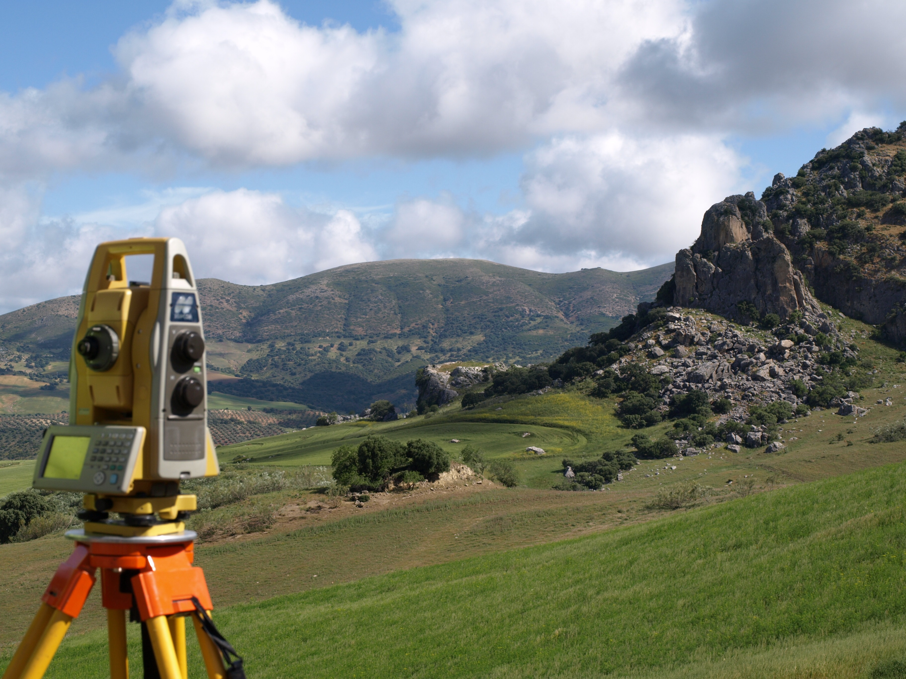
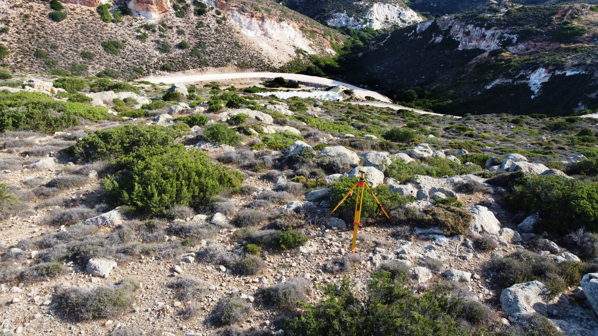

قبل أي مشروع بناء أو تقسيم أرض أو تسجيل عقاري لدى الوكالة الوطنية للمحافظة العقارية (ANCFCC)، ثمة خطوة غالبًا ما تكون ضرورية: المسح الطبوغرافي. ومع ذلك، يجهل كثير من أصحاب العقارات ما يتضمنه هذا المسح بالضبط، وما تكلفته، ومتى يكون مطلوبًا تحديدًا.
في هذا الدليل، يشرح لكم STOPSIT كل شيء، من التعريف إلى الخطوات الملموسة على أرض الواقع.

ما هو المسح الطبوغرافي؟
المسح الطبوغرافي هو عملية قياس دقيقة تهدف إلى تمثيل قطعة أرض بشكل صادق على مخطط. يرصد هذا المسح جميع الخصائص المادية للقطعة:
- التضاريس: الارتفاعات والانحدارات وخطوط المستوى
- حدود الملكية: المعالم الحدودية والأسوار والجدران المشتركة
- المنشآت القائمة: المباني والجدران والبلاطات
- النباتات البارزة: الأشجار المنعزلة والأسياج
- الشبكات: الطرق والأنابيب المرئية وقنوات المياه
النتيجة النهائية هي مخطط طبوغرافي مقاس، مطابق لمعايير الوكالة الوطنية للمحافظة العقارية، يُشكّل أساس أي ملف مساحي أو بنائي جاد.
- لأي ملف تقني مساحي (DTC) مقدَّم إلى الوكالة الوطنية للمحافظة العقارية (تسجيل، تجزئة، اندماج…)
- لأي عملية تقسيم أراضٍ أو تفريز
- بالنسبة لطلب رخصة البناء، تشترط البلدية عادةً طلب شهادة التحديد — وقد يُطلب أيضًا مسح طبوغرافي كامل حسب الحالة
- لأي مشروع بناء يستلزم معرفة دقيقة بتضاريس الأرض أو حدودها
رخصة البناء: شهادة التحديد أم المسح الطبوغرافي الكامل؟
هذا سؤال يطرحه عملاؤنا كثيرًا. بالنسبة لطلب رخصة البناء، ما تشترطه البلدية ومصالح التعمير عمليًا هو عادةً طلب شهادة التحديد (bornage). تُثبت هذه الوثيقة أن الحدود الطبيعية للأرض قد تجسّدت على يد مهندس مساح طبوغرافي معتمد.
أما المسح الطبوغرافي الكامل — بخطوط مستواه وتفاصيل تضاريسه وتمثيله الشامل للأرض — فهو ضروري للملفات المقدَّمة إلى الوكالة الوطنية للمحافظة العقارية، ومشاريع التجزئة، وأي مشروع بناء على أرض معقدة.
في حالة الشك في ما يتطلبه ملفك بالضبط، يمكن لـ STOPSIT توجيهك بسرعة نحو الخدمة المناسبة.
لماذا اللجوء إلى محترف معتمد؟

جهاز GNSS عالي الدقة — دقة سنتيمترية
في المغرب، لا يحق إلا لـمهندس مساح طبوغرافي مسجّل في هيئة مهندسي المساحة الطبوغرافية إجراء مسح طبوغرافي مقبول لدى الوكالة الوطنية للمحافظة العقارية والجهات المختصة.
الأجهزة المستخدمة — أجهزة GPS GNSS (Kolida, Trimble, CHC Huace) ومحطات SOKKIA الشاملة — تتيح دقة سنتيمترية تضمن موثوقية الإحداثيات المرصودة.
سيُرفض أي مسح يُجريه غير محترف أو بأجهزة غير ملائمة عند تقديم الملف المساحي، مما يُفضي إلى تأخيرات وتكاليف إضافية يمكن تجنبها.
مراحل المسح الطبوغرافي الأربع
-
معاينة الموقع
زيارة مسبقة لتقييم إمكانية الوصول والنباتات الكثيفة والشبكات الباطنية وتقدير تعقيد المهمة. في هذه المرحلة يُحدَّد العرض النهائي للسعر.
-
جمع البيانات على أرض الواقع
وضع نقاط مرجعية، وقياس الزوايا والمسافات بالمحطة الشاملة، وتسجيل إحداثيات GPS للحدود والتفاصيل. لقطعة أرض بمساحة 1000 م²، تستغرق العملية الميدانية نصف يوم في الغالب.
-
المعالجة الحاسوبية للبيانات
المعالجة اللاحقة لبيانات GNSS ببرنامج Trimble Business Center، ورسم المخطط بـ AutoCAD / COVADIS، وحساب المساحات، وتوليد خطوط المستوى، والتحقق من التناسق.
-
تسليم المخطط الموقَّع والمختوم
يُسلَّم المخطط الطبوغرافي بصيغة ورقية (A3/A0 حسب المساحة) ورقمية (DWG + PDF)، موقَّعًا من المهندس المسؤول ومختومًا بختمه المهني.
ما هي تكلفة المسح الطبوغرافي في المغرب؟
- مساحة الأرض (بالمتر المربع أو الهكتار)
- إمكانية الوصول: أرض في المدينة مقابل منطقة ريفية نائية
- التضاريس: أرض مستوية مقابل أرض وعرة
- الغرض من المخطط: مسح بسيط أم ملف مساحي كامل
يُقدّم STOPSIT عروض أسعار مجانية ومخصصة خلال 24 ساعة. يكفي إخبارنا بالمساحة التقريبية للأرض وموقعها والغرض من المسح. اتصل على +212 661-688603 أو راسلنا على stopsit.sarl@gmail.com.
المسح الطبوغرافي مقابل الملف التقني المساحي: ما الفرق؟
- المسح الطبوغرافي ينتج مخططًا يمثّل الأرض بصدق (التضاريس والحدود والمنشآت).
- الملف التقني المساحي (DTC) يتضمن المسح الطبوغرافي إضافةً إلى جميع الوثائق الإدارية والبيانية المطلوبة من الوكالة الوطنية للمحافظة العقارية للتسجيل أو تحديث رسم الملكية.
للتسجيل العقاري، يلزم الاثنان معًا. يتكفل STOPSIT بإعداد الملف بالكامل من أوله إلى آخره.
خلاصة
المسح الطبوغرافي هو اللبنة الأولى لأي مشروع عقاري جاد في المغرب. إذا أنجزه محترف معتمد، فإنه يحمي استثمارك ويجنّبك النزاعات الحدودية ويضمن مطابقة ملفك للمتطلبات الإدارية.
مع أكثر من 2900 ملف مساحي أُنجز منذ 2005، يبقى STOPSIT شريككم الموثوق في القنيطرة وعموم المغرب.